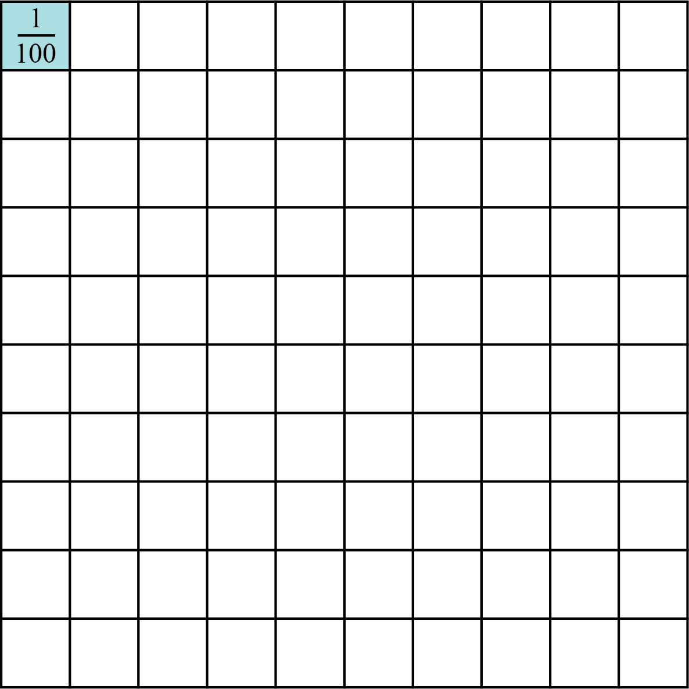

The shaded part is of the whole shape and is written as 0.01.
The number 0.01 is obtained by dividing 1 by 100. Other decimals can be obtained from the diagram. For example;
(a)
(b)
(c)
Example of decimal numbers with more than two decimal places are:
(a)
(b)
(c)
Numbers with more than one decimal place are read from left to right. The digits to the left of the decimal point are read as whole numbers. The digits to the right of the decimal point are read individually. For example;